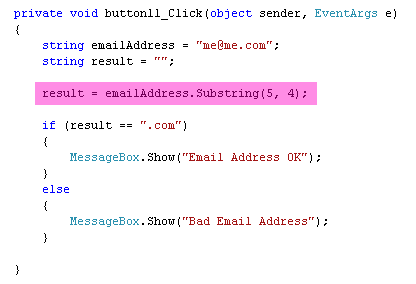

Substring in C# .NET
The Substring method is used to grab characters from a string of text. For example, suppose you were testing an email address. You want to test the last four characters to see they are .com. You can use Substring to return just those four characters, and see what's in them. (You can also use IndexOf to achieve the same result.)
Substring has this syntax:
the_word.Substring( start_position )
So the word you want to grab characters from goes first, followed by the Substring method. In between the round brackets, you have to tell C# where in the word to start grabbing characters from.
But Substring can also take a second parameter:
the_word.Substring( start_position, num_of_chars_to_grab )
The second parameter is how many characters you want to grab. If you leave this out, C# will grab all the characters to the end of your word. Here's some code to try, with a new button:

We're using Substring with two parameters (5, 4). But since we're grabbing to the end of the word, we could have left out the , 4 at the end.
To test it out, change the me@me.com to me@me.con. Run your programme and you should see "Bad Email Address". Change it back and the email address will be OK.
Exercise M
Use Substring to check that an email address ends in .co.uk. For the email address
to check, use enquiry@me.co.uk.